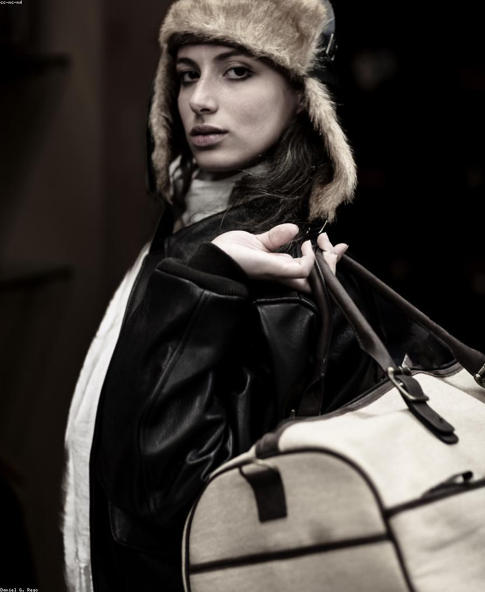
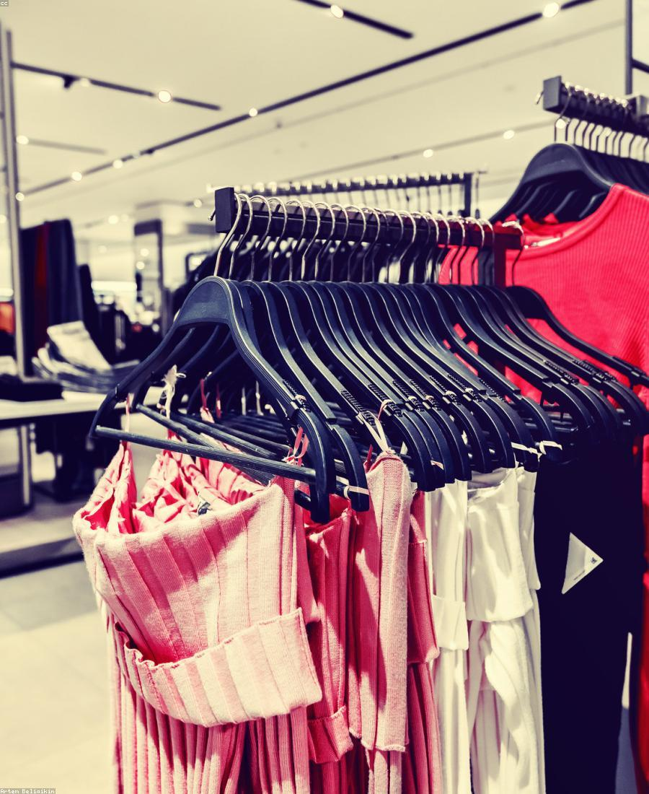
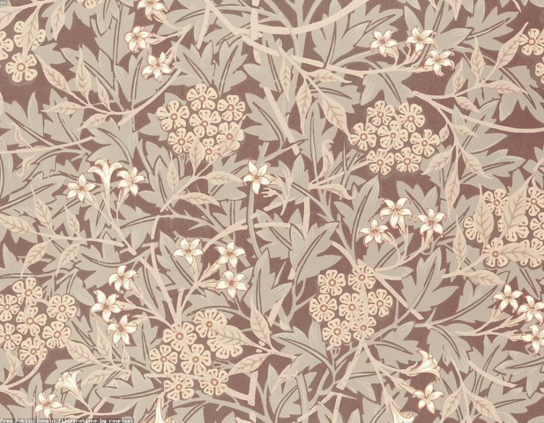
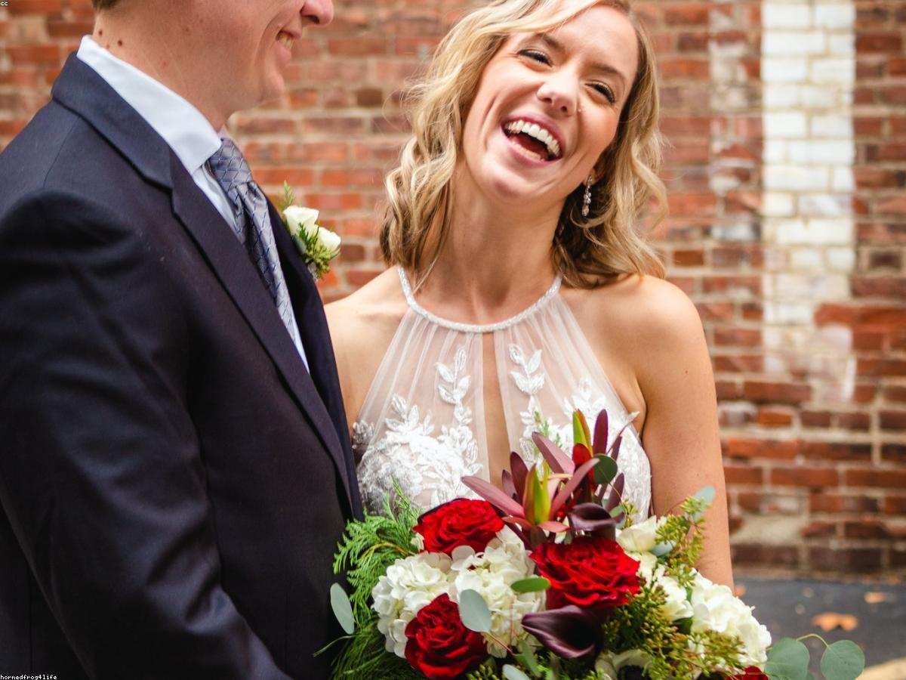

Transformações que vão muito além da roupa
Cada consultoria é uma história diferente. Partilhamos algumas, com a permissão e a gratidão de quem as viveu.

"Sentes que a tua imagem faz com que as pessoas te levem menos a sério?"
Foi exatamente assim que a Rita chegou até nós. Recém-formada em Psicologia, sentia que a sua imagem não refletia a mulher e a profissional que queria ser — não sabia o que vestir, não conseguia coordenar roupa e acessórios e comprava peças que depois não usava.
Partimos dos 7 Estilos Universais e chegámos a um estilo Alegre & Livre — uma combinação que traduz a sua energia e a forma como deseja ser vista todos os dias. Depois de descobrir as suas cores e o seu biótipo, reconstruímos o seu guarda-roupa com clareza e intenção.


Entre a empresa, a família e as responsabilidades, deixou de se ver a si própria
O armário estava cheio, mas vestia sempre o mesmo. O espelho estava lá, mas evitava olhar — não porque não gostasse de roupa, mas porque já não se reconhecia.
Ao longo do processo, trabalhámos muito mais do que a imagem exterior: o seu estilo, a sua coloração pessoal, o seu biótipo e o guarda-roupa. Hoje, a Margarida continua a ser a mesma mulher, empresária e mãe — só que agora a sua imagem comunica aquilo que ela sempre foi: uma mulher forte, elegante e confiante.


"Que vivam felizes para sempre!"
Analisámos a coloração pessoal da Sara e o seu tipo de rosto, e recomendámos tudo para uma imagem harmoniosa e linda em que todos os detalhes foram pensados ao pormenor — do toucado à maquilhagem, dos brincos ao vestido.
No dia do casamento, cada escolha comunicava exatamente a noiva única que ela é.
Comentários reais, histórias reais
Obrigada querida Ana! Sem ti, toda a tua dedicação, atenção, carinho e profissionalismo, era impossível não ter chegado ao resultado final.
Linda mesmo a Sarita 😍 — os detalhes ficaram incríveis, dava para ver o cuidado em cada escolha.
Ansiosa por ver a transformação final. ❤️ Adoro acompanhar este processo passo a passo.
A cada novo tecido, surgia uma nova versão de mim — mais luminosa e mais parecida com quem realmente sou.
Este é apenas o início da transformação — mas já sinto que a minha imagem está muito mais próxima de quem sou.
Deserta para ver a transformação — acompanho sempre estes conteúdos, dão-me vontade de cuidar mais de mim.
A tua transformação pode ser a próxima
Agenda a tua sessão de avaliação e começa hoje o teu processo de autoconhecimento e imagem.